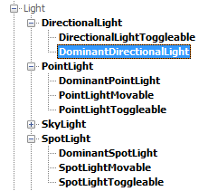
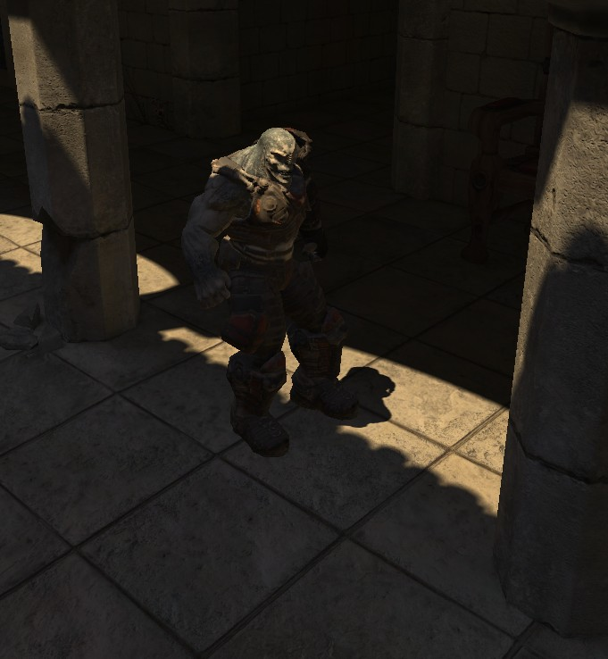
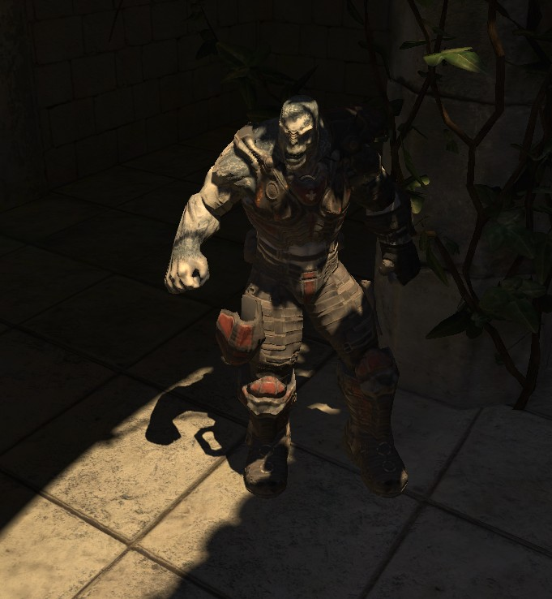
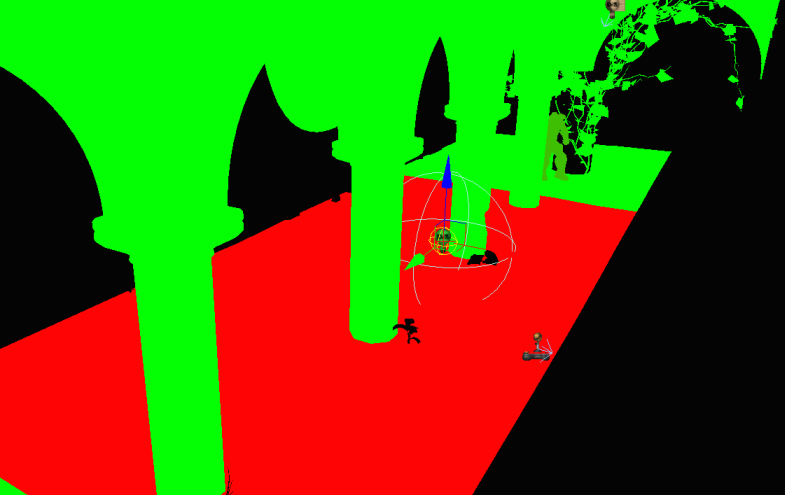

Dominant Lights
Document Changelog: Created by Daniel Wright.
Overview
Existing level and character lighting in UE3 is very general and flexible, for example there's no code limit to the number of dynamic lights or shadows affecting a primitive, and you can use many shadowing types (shadow volumes, precomputed shadow maps per vertex or texture, different types of shadow map filtering) with different light types. Unfortunately this generality has a performance and quality cost when a very specific lighting scenario is desired, for example outdoor lighting where the sun is the most significant light, followed by its indirect lighting and the influence of the sky. Dominant lights exist to special case lighting setups with few significant lights and gain back the lost quality and performance.
Note: Dominant lights are only supported in levels that use Lightmass!
Versions
The DominantDirectionalLight actor was first introduced in QA_APPROVED_BUILD_JUL_2009. DominantPointLight, DominantSpotLight and character shadowing improvements for all dominant lights (preshadows, normal shadows instead of modulated) were introduced in QA_APPROVED_BUILD_AUG_2009.
Relevant TechBlog entries
Search for 'Character shadowing improvements' and 'Dominant Directional Light' on the TechBlog.
Light Types
There are three dominant light types: DominantDirectionalLight, DominantPointLight and DominentSpotLight that can be placed in levels, you can find them in the Actor Classes as seen below:

Dominant lights affecting the static environment
Dominant lights use precomputed shadows, to avoid the large GPU cost of full scene dynamic shadows. Precomputed shadows from dominant lights are stored separately from the lightmap, just like toggleable lights. This has two main benefits:
- It allows dynamic shadowing to affect only the dominant light. Lights put into the lightmap cannot be shadowed this way and can only be affected with Modulated Shadows instead.
- It allows specialized storage of the direct shadows from the dominant light. Direct shadows are where the most high frequency lighting information is, and can be stored at a higher resolution than the rest of the lighting. We can also use a different representation for the shadow data, all dominant light types currently use DistanceFieldShadows.
- Only the shadow of the dominant light is precomputed, so the rest of the light's influence is dynamic. Specular from dominant lights looks just like specular from dynamic lights, instead of the lightmap specular used by lights that get put into the lightmap. Gradients created by the light's attenuation are not affected by lightmap compression.
Dominant lights affecting light environments
Light Environments composite the influence of static lights affecting them, using ray traces to determine character shadowing, and represent those lights with two virtual lights and a single modulated shadow. This works well for scenes with many static fill lights, but degrades in outdoor scenes with high frequency environment shadows that are expected from the sun. Dominant lights do not get composited into light environments, instead they affect the light environment directly as a dynamic light. The light environment will have a normal shadow that blends in with the dominant light's precomputed shadows on the world, instead of double shadowing and projecting through geometry as modulated shadows do. As an added benefit, preshadows are enabled on light environments. Preshadows are dynamic shadows from the static environment onto dynamic objects. These are particularly important visually for characters when a dominant directional light is active because the dominant light enables sharp shadows on the static environment. If the character is shadowed with the existing on/off visibility traces to lights, it will look out of place.
This scene shows a dominant directional light with distance field shadows on the static environment, casting dynamic preshadows on the character which is using a light environment, and the character's normal shadows blending in with the precomputed shadows on the world.


Performance impact
Since dominant lights render their direct lighting dynamically, they cost more than fully lightmapped lights like DirectionalLight. On consoles dominant lights are merged into the base pass for best performance, but on PC they are rendered in a separate additive pass because of the lower number of interpolators available. This means that on PC, shader complexity will accurately show the level as costing more when a dominant light is enabled, but the extra cost will not be nearly as large when running the level on a console. Dominant lights cause additional overhead due to their use of preshadows, which require a lot of rendering thread setup work.
See DominantLightsXenon for Xbox 360 specific performance information.
Limitations
Dominant lights use distance field shadows, and therefore have all the same limitations.
Dominant light errors
There are three indicators when multiple dominant lights are affecting a primitive, which means it will render incorrectly on consoles:
- A map check error "Maps have multiple dominant lights affecting one primitive, these will show up red in lighting complexity and render incorrectly on consoles."
- A lighting result error for each primitive saying "Object is affected by multiple dominant lights, each primitive can only be affected by one dominant light at most." Clicking Goto will take you to the offending primitive.
- In the Light Complexity viewmode, primitives with only one dynamic/dominant light will show up green. Primitives affected by two dominant lights will show up red as seen below, where the red floor is affected by both a dominant directional light and the selected dominant point light.

Important!
You are viewing documentation for the Unreal Development Kit (UDK).
If you are looking for the Unreal Engine 4 documentation, please visit the Unreal Engine 4 Documentation site.